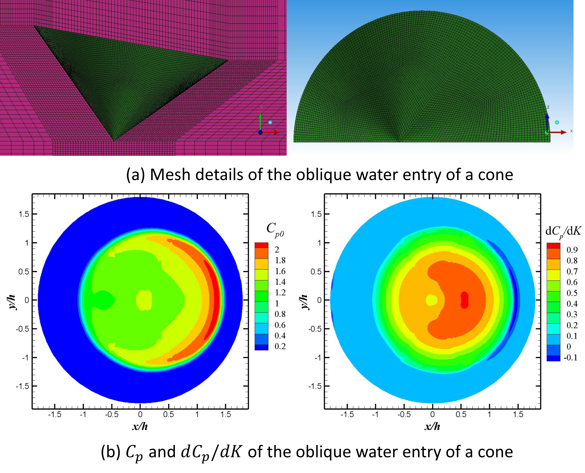

Approximate solution of the varying speed impact of three-dimensional bodies on the water surface

Abstract
This paper proposes an approximate solution for the varying speed impact of three-dimensional (3D) bodies on the water surface, with the assumptions that the fluid is considered to be incompressible, inviscid, weightless, and with negligible surface tension effects and the flow to be irrotational. The approximate solution provides a linear relationship between Cp and a dimensionless variable K, and the equation of body acceleration. These equations can be used to rapidly predict the pressure distribution on the body surface and the motions of the body. The predictions of the approximate solution match the computational fluid dynamics results very well for the varying speed impacts, including the normal and oblique impacts of a cone on the water surface and the normal impact of a pyramid on the water surface. The present approximate solution can be suitable for the two-dimensional, axisymmetric, and fully 3D impacts of bodies on the water surface with varying speed.
Read the published article ↗